The Role of the Architect
Systems Architecture · Chapter 9
Starting Part 3: Creating System Architecture
- Part 2 was about holism — the architect must manage a huge number of considerations
- This can be misread as “the architect is a generalist.” Not so: to paraphrase Eberhardt Rechtin, the architect is a specialist in simplifying complexity, resolving ambiguity, and focusing creativity
- The architect is not the design team, the financial controller, the marketing executive, or the plant manager
Tip
Three principal roles: reduce ambiguity, employ creativity, manage complexity.
The Three Roles of the Architect
Reduce ambiguity
Define the boundaries, goals, and functions of the system.
Employ creativity
Create the concept.
Manage complexity
Choose a decomposition of the system.
These three roles all center on information: reducing ambiguity by identifying necessary, consistent, important information; adding new information through creativity; and managing the explosion of information in the final architecture.
9.2 Ambiguity and the Role of the Architect
Before the Architect Is Engaged
- There has been an “upstream process” — full of ambiguity, issues, opportunities, and needs for the new system
- What are the high-priority needs vs. the “nice to haves”? What regulations apply? How is manufacturing competence aligned with the envisioned product?
The architect drives ambiguity out of the upstream process. The architect is responsible for creating boundaries and concretizing goals.
Driving Ambiguity Out: The Architect’s Inputs
- Interpreting corporate and functional strategies, competitive marketing analyses
- Listening to users, beneficiaries, customers, or their representatives
- Considering the competence of the enterprise and its supply chain
- Considering operations and the operational environment of the system
- Infusing technology where appropriate
- Interpreting regulatory and pre-regulatory influences
- Recommending standards, frameworks, and best practice
- Developing goals for the system based on the upstream influences
From Goals to Concept to Complexity
Employing creativity: once goals are defined, there’s a creative task — defining a concept. A good concept doesn’t ensure success, but a bad concept almost certainly dooms a system to failure. Tasks include proposing concept options, identifying key metrics and drivers, conducting highest-level trades, selecting a concept (and perhaps a backup), thinking holistically about the full lifecycle, and anticipating failure modes.
Managing complexity: once a concept is chosen, information explodes rapidly — external interfaces, first-level design, decomposition, downstream considerations. The architect manages this by decomposing form and function, allocating functionality to form, defining interfaces, configuring subsystems, balancing flexibility vs. optimality, and controlling product evolution.
Box 9.1 · Principle of the Role of the Architect
“Some single mind must master, else there will be no agreement in anything.” — Abraham Lincoln
“Timing has a whole bunch to do with the outcome of a rain dance.” — Cowboy saying
- The role of the architect is to resolve ambiguity, focus creativity, and simplify complexity — creating elegant systems that create value and competitive advantage
- Given the ambiguity and complexity in most systems, it’s often desirable to have architecture created by a single individual or a small group
- The architect maintains a holistic view but always focuses on the small number of issues critical to the design, and adopts different frameworks and paradigms as appropriate — not a single fixed method
Two Kinds of Ambiguity
Ambiguity is composed of two ideas: fuzziness and uncertainty. In common usage it also connotes incorrect, missing, or conflicting information.
Fuzziness
Occurs when an event or state is subject to multiple interpretations. “Smooth finish” or “good gas mileage” mean different things to different customers — fuzziness is influenced by context.
Uncertainty
Occurs when an event’s outcome is unclear or in doubt. We can articulate the possible states, but not which one will occur — like a coin flip.
The (X, Y, Z) Shorthand for Compounding Ambiguity
Where X, Y, Z are the true inputs to the system:
- Unknown information (X, __, Z): information is under-determined or unavailable. A known unknown is knowing you lack it (a competitor’s plans); an unknown unknown is not even knowing you lack it (a brand-new competitor appears)
- Conflicting information (X, D, Z and X, B, Z): two or more sources offer opposing indications — the problem is over-determined
- False information (F, Y, Z): you believe you have complete information, but some of it is simply wrong
Classifying Ambiguity — A Quick Drill
- Will it be a boy or a girl? (Uncertain, Fuzzy)
- Produce a low-cost, high-quality product. (Conflicting, Fuzzy, Unknown)
- Every fourth year is a leap year. (False)
- Please make me a smooth cover for this phone. (Fuzzy)
- Make sure we meet your quarterly goals. (Unknown, Conflicting)
Tip
Ambiguity is almost always present in the upstream influences — segmented roughly by corporate function: strategy, marketing, customers, manufacturing, operations, R&D, regulations, standards.
Box 9.2 · Principle of Ambiguity
“The best-laid schemes o’ mice an’ men / Gang aft agley [often go awry]” — Robert Burns
- The early phase of a system design is characterized by great ambiguity — the architect must resolve it to produce (and continuously update) goals for the team
- Development is possible only with the acceptance of uncertainty
- No one designs or rigorously controls the upstream process — there should be no expectation of unambiguity
- Uncertainty can create opportunities; it is not always bad
- Uncertainties should be identified and prioritized so they can be managed
Deliverables of the Architect
Deliverables are different from tasks — they are the end result, not the procedure by which it’s achieved.
- A clear, complete, consistent, attainable (80–90% confidence) set of goals, emphasizing functional goals
- A description of the broader context, including the whole product context
- A concept for the system, and a concept of operations including contingency/emergency operations
- A functional description with at least two layers of decomposition
- The decomposition of form to two levels of detail, and the structure at this level
- Details of all external interfaces and a process for interface control
- A notion of developmental cost, schedule, risk, and design/implementation plans
Section 9.2 Summary
- The role of the architect includes reducing ambiguity, employing creativity, and managing complexity
- Architecture sits astride upstream activities (before) and downstream activities (after) — ambiguity arises from both
- In practice, ambiguity is a combination of fuzzy, uncertain, missing, conflicting, and incorrect information
- The principal job of the architect at the interface to the upstream (the “fuzzy front end”) is to drive as much of this ambiguity from the system as possible
9.3 The Product Development Process
What Is a PDP?
Nearly every large firm has a product development process (PDP) — capturing methodology, terminology, phases, milestones, and tasks/outputs.
- A principal advantage: it’s a tool for reducing ambiguity by defining tasks and responsibilities
- But it’s easy to be lulled into thinking the PDP resolves upstream ambiguity automatically — this is only partially true. A PDP can do the architect a disservice if it presumes more certainty than is actually present
- We seek a PDP that is “birth to death” and “lust to dust” — capturing everything from first envisioning a product to retiring the last instance
Figure 9.1 · NASA’s PDP
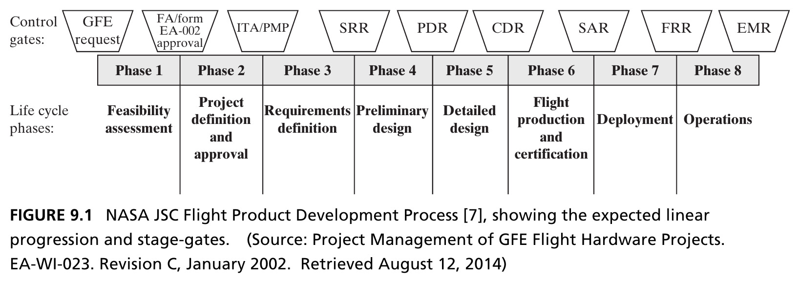
Includes some of the fuzzy front end (feasibility, approval, requirements) and includes operations — since NASA is usually the operator of its own products. Very traceability- and review-heavy, reflecting low-volume, high-cost, high-perceived-risk systems. Source: Crawley, Cameron & Selva (2016), Fig. 9.1.
Figure 9.2 · Helicopter Inc.’s PDP
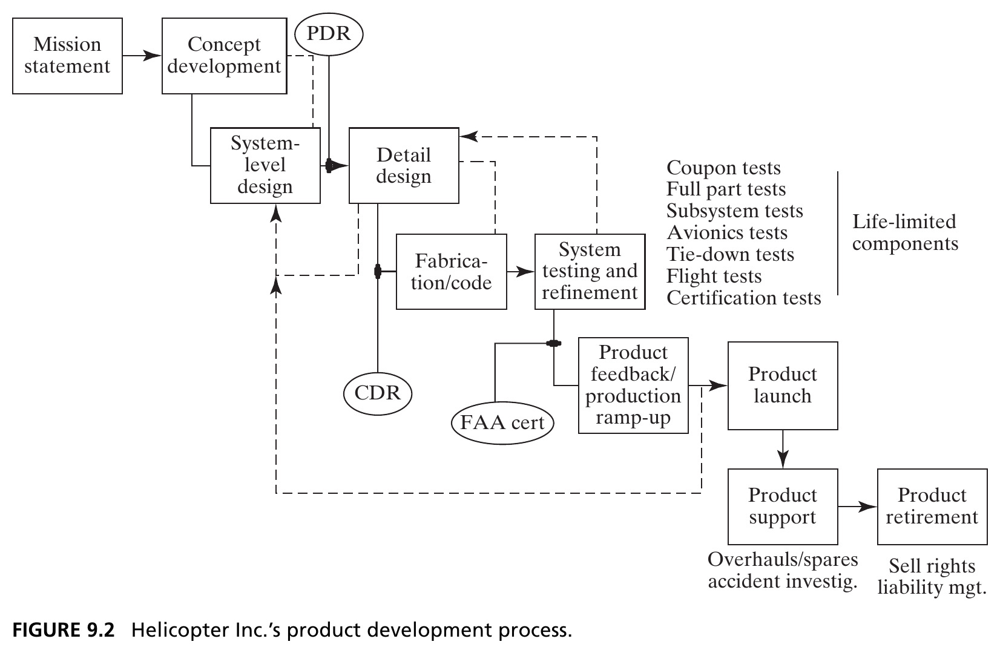
Compared to NASA, iteration loops stand out — even in aerospace, iteration is inevitable and not at odds with a stage-gated process. The process centers on FAA certification, itself an instrument of the more important process: sales. Source: Crawley, Cameron & Selva (2016), Fig. 9.2.
Figure 9.3 · Camera Co.’s PDP
- Camera Co.’s PDP explicitly shows upstream processes: strategy, voice of the customer, and R&D — all part of “conceiving”
- Manufacturing process development precedes product development — Camera Co. is a process-driven industry
- Raises a question: does the architect’s role in reducing manufacturing ambiguity matter more than innovation, given a stable customer base?
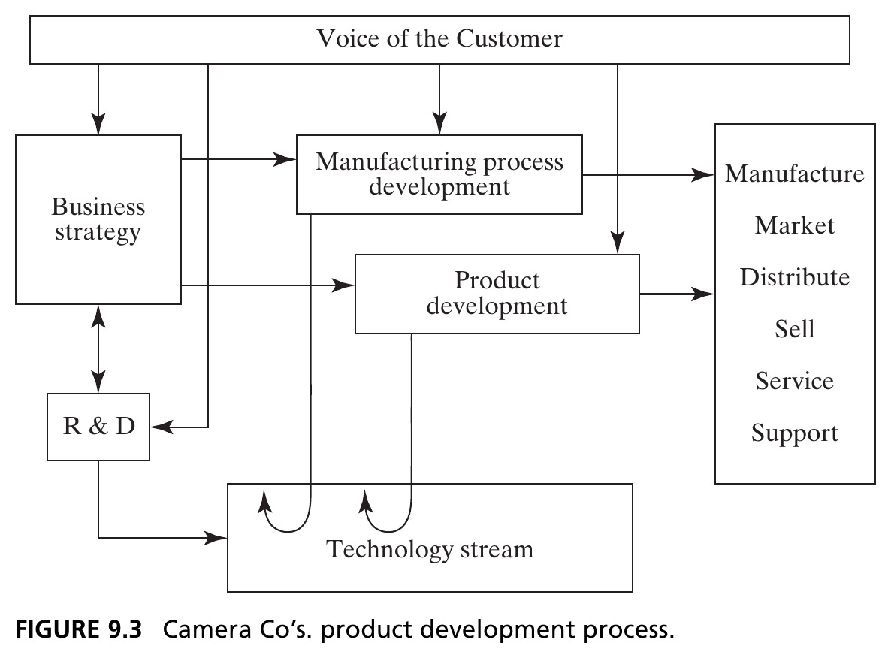
Figure 9.4 · An Agile PDP
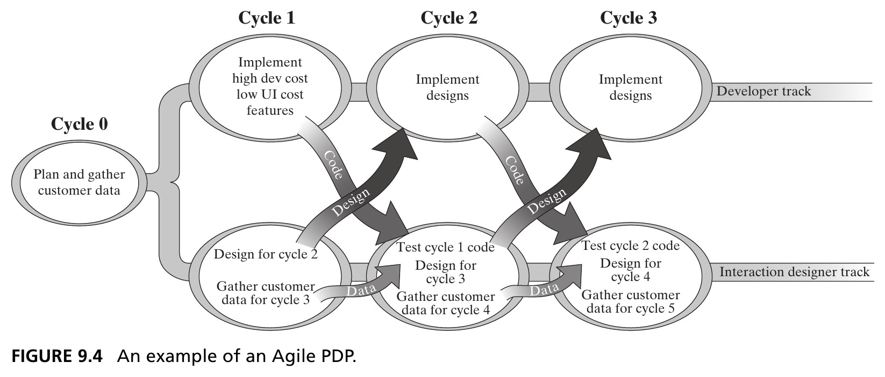
Agile emphasizes iterative, incremental development — collaborative teams evolve requirements and solutions evolutionarily. Originated in rapid prototyping of software for small/medium applications; since extended (with mixed success) to capital-intensive, longer-lifecycle industries. Source: Crawley, Cameron & Selva (2016), Fig. 9.4.
Comparing the Four PDPs
Are differences between PDPs superficial, or substantial? Some observed differences:
- Existence/number of phases and phase exit criteria
- Existence/number of design reviews, timing for committing capital
- Requirements “enforcement,” degree of customer input/feedback/aftermarket integration
- Degree of explicit/implicit iteration, amount of prototyping
- Internal testing/validation effort, importance of traceability, timing of supplier involvement
Tip
Many factors could drive real differences: hardware vs. software, existing vs. new product, standalone vs. platform, production volume, capital intensity, technology push vs. market pull.
Figure 9.5 · The Generic PDP
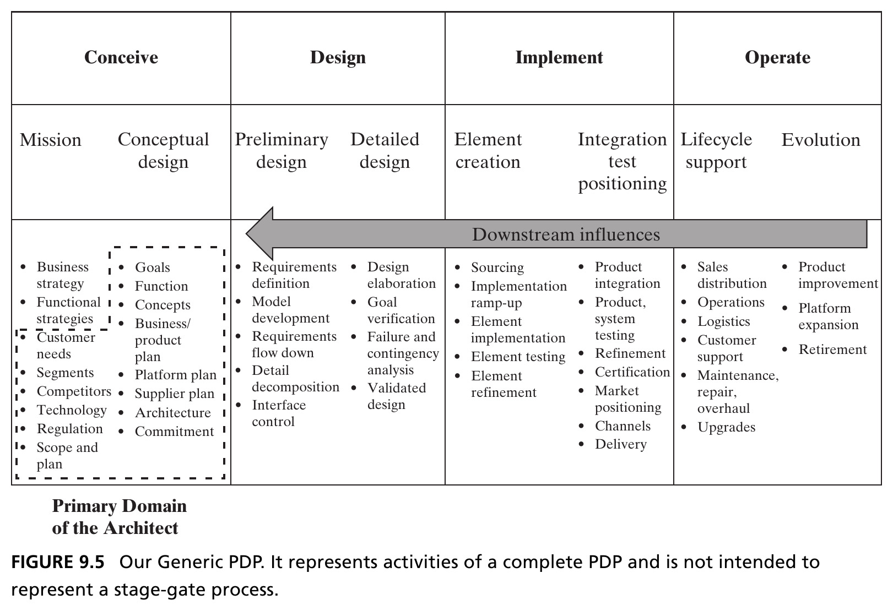
Four common activity groups: conceiving, designing, implementing, operating — a checklist, not a stage-gate process. The architect’s primary domain sits in “conceive,” but must move relevant downstream information back into the architecting phase. Source: Crawley, Cameron & Selva (2016), Fig. 9.5.
Linear Representations Are Flawed
Studies have shown that linear representations of the design process are deeply flawed — they fail to represent iterations and feedback, presume a linear flow of time and effort across stages, and can mask a design’s immaturity when gate criteria are compromised.
- The Generic PDP is a checklist of activities that appear in complete PDPs, not a mandated sequence
- “Implementing” deliberately includes coding software, manufacturing hardware, and integrating into systems
- “Operating” includes support and release of future product instances — ending in retirement
Section 9.3.1 Summary
- Nearly every large firm has an internal PDP — a tool for reducing ambiguity, but one that can mislead if it presumes more certainty than is actually present
- Comparing PDPs across NASA, Helicopter Inc., Camera Co., and Agile reveals many superficial differences, but real underlying similarities
- The Generic PDP codifies this common practice as four activity groups: conceive, design, implement, operate — deliberately not a stage-gate process
9.3.2 The Global PDP
Building the Global PDP
- To further support comparison across PDPs, we construct an extended baseline: the Global PDP, in three nested views
- Level 1 centers on the architecture of the product — function and form — as a reflection of product goals, themselves set to respond to market/stakeholder needs
- The architect answers the canonical W Questions: why, what, how, where, when, who, how much
Tip
Quo is the shared Indo-European root of these words across languages — French qui/quoi/quand, Hindi kab/kya/kyon, and the seven circumstances of the ancient Greek rhetorician Hermagoras.
Figure 9.6 · Level 1 — The Holistic Framework
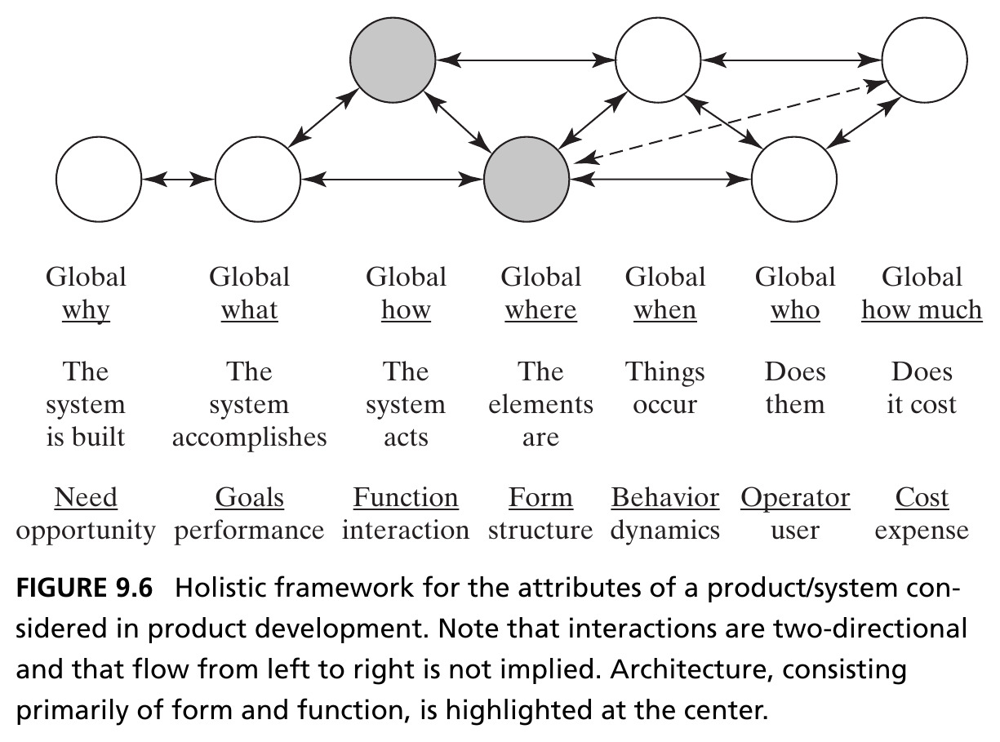
Architecture — form and function — sits at the center of the framework. Interactions are two-directional; flow from left to right is not implied. Source: Crawley, Cameron & Selva (2016), Fig. 9.6.
Figure 9.7 · Level 2 — Design and Implementation in Parallel
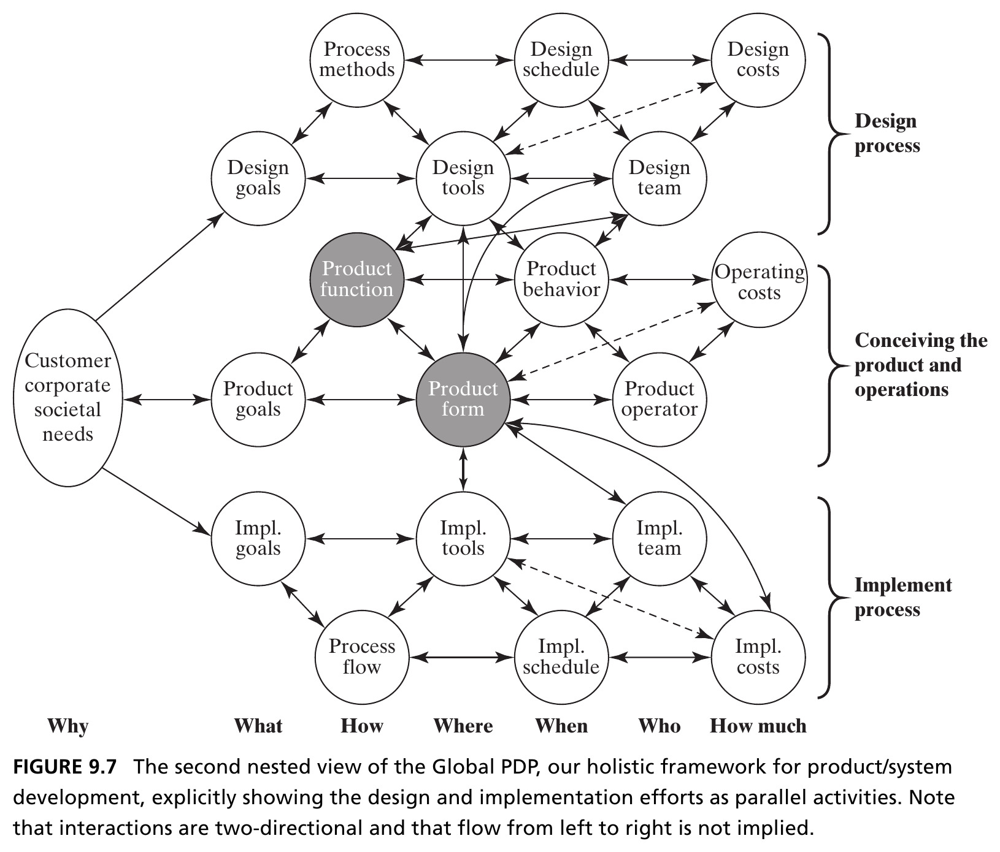
Moving up a layer: the design process and implementation process each get their own instantiation of the W Questions. The design process has its own form too — notably design tools, which shape and constrain the system form that’s achievable. Source: Crawley, Cameron & Selva (2016), Fig. 9.7.
Figure 9.8 · Level 3 — The Enterprise Context
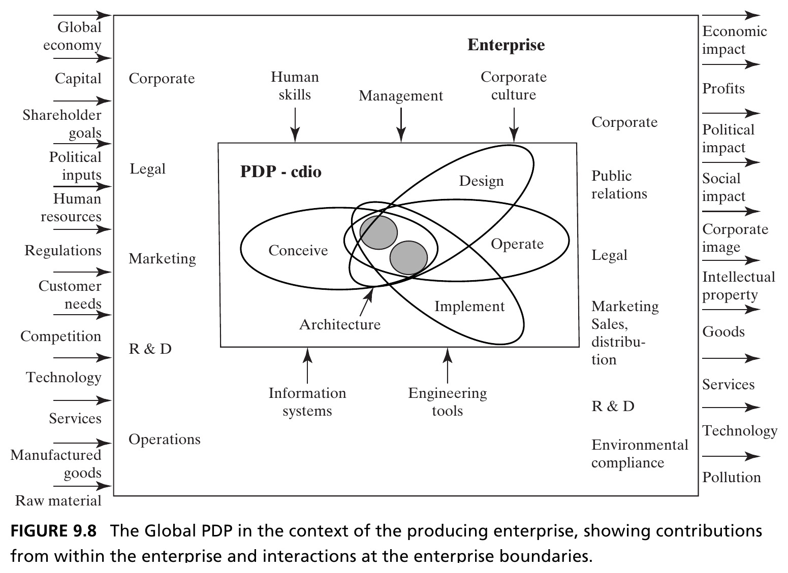
The broadest nested view: the firm’s PDP inside the enterprise boundary (R&D and corporate functions mostly upstream; PR, sales, distribution mostly downstream), plus external actors and attributes — capital, competition, regulation — that affect the enterprise. Source: Crawley, Cameron & Selva (2016), Fig. 9.8.
Box 9.3 · Principle of the Stress of Modern Practice
“Things which matter most must never be at the mercy of things which matter least.” — Johann Wolfgang von Goethe
Modern product development — with concurrency, distributed teams, and early supplier engagement — places even more emphasis on having a good architecture:
- Accelerating development via concurrency increases the importance of initial conceptual decisions
- Empowering distributed/non-collocated teams increases the importance of well-coordinated, visible high-level design guidance
- Involving suppliers early increases the importance of an architectural concept and baseline — suppliers can define or defy decomposition
Section 9.3.2 Summary
- The Global PDP is a nested framework used to compare different PDPs on a common baseline, built around the canonical W Questions
- It reveals the architect’s system boundary — largely, but not exclusively, the “conceive” activities
- The purpose of the broadest view is to remind the architect: understanding the contents of the PDP is not sufficient — the firm and its context matter too
Box 9.4 — Case Study: Civil Architecture and System Architecture
Where “Architect” Comes From
By Steve Imrich, Architect and Principal at Cambridge Seven Associates
- Civil architecture has an interpretive-interactive-performance aspect that differs from most industrial/product design — buildings inherit complex cultural and symbolic qualities affecting space, materials, and user experience
- Ideally, the “special problems” of a building inform its design — as with helicopters, sailboats, or computers, concept/design/engineering can transcend mere style
- Because buildings are only seen/experienced as part of their site, their special problems always relate to a wider context: time, culture, infrastructure, human behavior, environment, re-interpreted use
- Buildings are rarely mocked up beforehand — a large element of risk, usually associated with the arts
Figure 9.9 · Concept in Civil Architecture
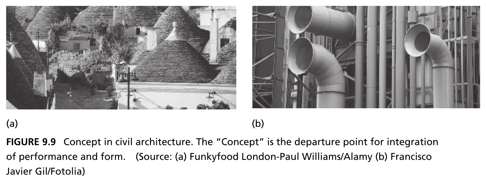
Left: Trulli houses, Alberobello, Italy (a). Right: industrial ductwork, Centre Pompidou, Paris (b). The concept is the departure point for integrating performance and form. Source: Crawley, Cameron & Selva (2016), Fig. 9.9. Photos: (a) Funkyfood London-Paul Williams/Alamy, (b) Francisco Javier Gil/Fotolia.
Six Ideas in “Design Process with Attitude”
- Context — the built environment, cultural norms, and history of the organizations and people the building serves
- Content — the building’s programmatic requirements and functional performance
- Concept — the unifying idea by which all design decisions are evaluated; concept generation succeeds when it integrates and balances the nature of content and context
- Circuitry — the connective tissue between functional components; more than a path from A to B, it creates interest and anticipation
- Character — a building’s material, site, and sense of life beyond the aggregation of parts
- Magic — the largely intangible quality defined by the user’s experience; magic fosters delight and joyful appreciation of the unexpected
Figure 9.10 · Magic in Civil Architecture
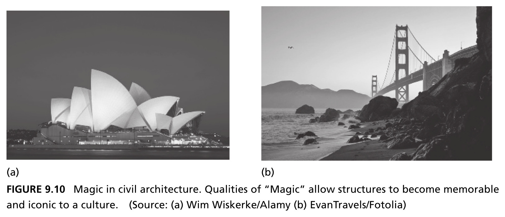
Left: Sydney Opera House (a). Right: Golden Gate Bridge (b). Qualities of “Magic” allow structures to become memorable and iconic to a culture. Source: Crawley, Cameron & Selva (2016), Fig. 9.10. Photos: (a) Wim Wiskerke/Alamy, (b) EvanTravels/Fotolia.
On Magic
“Surprise, as all art and architecture, helps us contemplate. Life wears out our ability for surprise. Surprise is the beginning of a true vision of the world.” — Eladio Dieste
- Magic is the emergence of elegance and character at the building level — the sleight of hand
- It is difficult to define, but when something is magical, it’s immediately recognizable
- Magic is the unusual circumstance that becomes normalized in good architecture — that moment of surprise that leaves a person in wonder and awe
- Real magic makes architecture symbolic and iconic in a sustained manner — it reaches beyond the original intent, communicating viscerally with users
Figure 9.11 · Overlaying Performance and Poetry
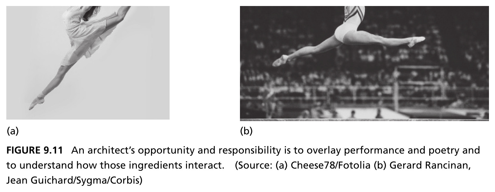
A ballerina and a gymnast share athleticism, dynamic patterning, and nuance of expression — yet one is considered “art,” the other “athletic expertise.” An architect’s opportunity and responsibility: to overlay performance and poetry, and understand how those ingredients interact. Source: Crawley, Cameron & Selva (2016), Fig. 9.11. Photos: (a) Cheese78/Fotolia, (b) Gerard Rancinan, Jean Guichard/Sygma/Corbis)
Chapter 9 Summary
- The architect is not a generalist, but a specialist in resolving ambiguity, focusing creativity, and simplifying complexity
- Ambiguity comes in many forms — fuzziness, uncertainty, and missing, conflicting, or incorrect information — and the architect must recognize and deal with each
- The architect is responsible for producing specific deliverables, central to reducing ambiguity and bridging corporate functions to the design environment
- Product development processes differ superficially across firms and sectors, but share deep common structure — codified here as the Generic and Global PDPs
- Architects must discern which segments of a PDP are centrally linked to their role, and stay skilled at interpreting new product development initiatives
Tip
Reference: Crawley, E., Cameron, B., & Selva, D. (2016). System Architecture: Strategy and Product Development for Complex Systems. Pearson. Chapter 9.
Next: Up/Down-stream Influences
Chapter 10 examines the principal upstream and downstream influences on system architecture in detail — including the ABCD Product Case.

← Course Home · Systems Architecture · Chapter 9